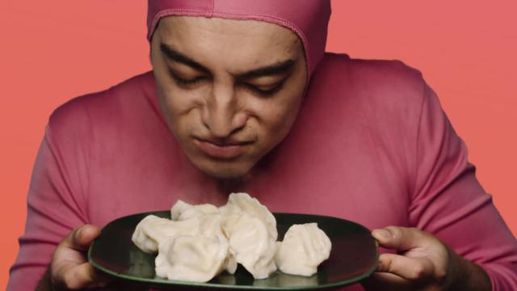

Dumplings

Description
One bad chef in a kitchen full of dough
Three bad bitches with their hands on the stove
Making home movies with a hand full of stoges
I'm cooking all the dumplings
I'm cooking all the dumplings
Ingredients
- 1 cup all-purpose flour
- 2 teaspoons baking powder
- 1 teaspoon white sugar
- ½ teaspoon salt
- 1 tablespoon margarine
- ½ cup milk
Steps
- Stir together flour, baking powder, sugar, and salt in medium size bowl. Cut in butter until crumbly. Stir in milk to make a soft dough.
- Drop by spoonfuls into boiling stew. Cover and simmer 15 minutes without lifting lid. Serve.
- To make parsley dumplings, add 1 tablespoon parsley flakes to the dry ingredients.
Return Home